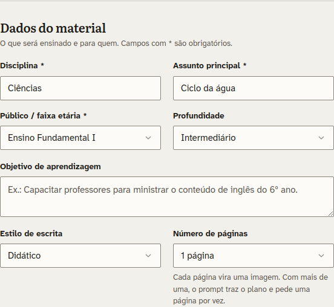
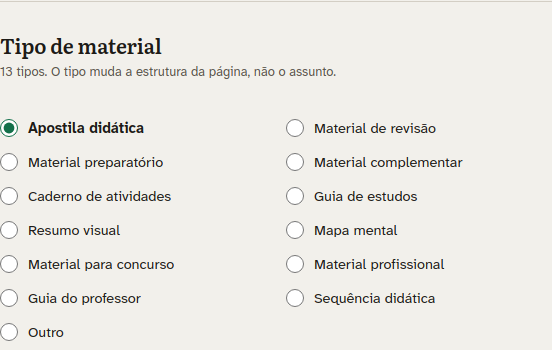
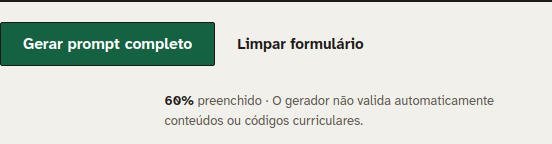

Novo projetonão salvo
Guia dos primeiros passos no GeradorOne
Transforme qualquer assunto em uma página de fácil leitura
Prompts visuais para apostilas, capas e materiais didáticos.
Do pedido ao material em três passos
Descreva o material
Escolha apostila ou capa, a disciplina, a série, o tema e o número de páginas. O app monta um prompt de imagem para cada página.
Escolha o estilo
Cartoon, Hand-drawn, Doodle, Cartoon Educacional, Scientific Illustration, Futuristic Digital, Infográfico Moderno, Minimalista, 3D Educacional, Realista, Livro Didático e Colorido Infantil. Cada um tem uma miniatura para você comparar.
Copie ou gere com IA
Copie o prompt, ou baixe em TXT, JSON ou PDF, e cole na sua ferramenta de imagens. Com "Melhorar com IA" você refina o texto. Com a sua chave de IA (BYOK), o material sai pronto em PDF.
Clique em "Apostila" e comece com 5 itens
Só três campos são obrigatórios. O restante já vem preenchido, então o primeiro prompt sai em poucos cliques.



O prompt gerado com esses 5 itens
Texto real gerado pelo app com Ciências, Ciclo da água e Ensino Fundamental I. Use a barra de rolagem para ler tudo e o botão para copiar.
ATENÇÃO: ESTE É UM PROMPT PARA GERAÇÃO DE IMAGEM.
A saída esperada é UMA IMAGEM ÚNICA: uma página visual de apostila didática sobre Ciclo da água, em página vertical A4 (210x297 mm), margens amplas, layout editorial de apostila impressa.
O estilo visual deve ser OBRIGATORIAMENTE: Livro Didático. Não misture com outros estilos.
O tipo de material deve ser OBRIGATORIAMENTE: Apostila didática.
Não responda com texto explicativo: produza a imagem descrita abaixo.
PAPEL
Atue como designer instrucional e ilustrador de material didático visual brasileiro.
CONTEXTO
Disciplina: Ciências
Tema: Ciclo da água
Público: Ensino Fundamental I
Nível de profundidade: Intermediário
Tipo de material: Apostila didática
Formato da página: página vertical A4 (210x297 mm), margens amplas, layout editorial de apostila impressa
Total de páginas: 1 página
Estilo de escrita: Didático
Estilo visual: Livro Didático
Paleta visual: Automática
REVISÃO TÉCNICA (FAÇA ANTES DE GERAR A IMAGEM)
Antes de desenhar, revise com rigor técnico todo o conteúdo que vai aparecer na imagem: fórmulas, unidades, datas, nomes, números, terminologia e as relações entre os conceitos. Corrija o que estiver errado, simplifique o que não tiver certeza e não inclua dado, fonte ou citação que você não possa confirmar. Só depois gere a imagem, sem escrever essa revisão na resposta.
MISSÃO
Gerar a IMAGEM de uma página completa de apostila didática sobre Ciclo da água, no estilo Livro Didático, pronta para impressão. Foco do material: explicar o tema de forma progressiva, do conceito básico à aplicação.
1) DESCRIÇÃO DA IMAGEM (PRINCIPAL)
Página didática de apostila didática sobre "Ciclo da água" em Ciências, no padrão de material educacional brasileiro.
Siga RIGOROSAMENTE o estilo Livro Didático:
- Ilustração: ilustrações editoriais limpas de livro didático brasileiro, com contorno suave e cores equilibradas.
- Página: fundo branco, cartões de cantos arredondados com sombra suave, faixas de título coloridas, etapas numeradas em círculos e ícones lineares consistentes.
- Tipografia: títulos grandes, subtítulos médios e corpo pequeno, no máximo 2 famílias sem serifa.
- Evite: estética de pôster publicitário e excesso de efeitos.
Personagens, se houver, devem ser crianças da faixa etária de Ensino Fundamental I.
Cada ilustração deve representar diretamente um conceito do conteúdo; nada decorativo sem função.
Textos curtos, rótulos em negrito e legíveis. Priorize a explicação visual sobre o texto corrido.
Seções bem delimitadas, espaço generoso entre os blocos, margens amplas e nenhum elemento cortado nas bordas.
Conceitos-chave em caixas de destaque ("Dica", "Atenção", "Resumo") no visual do estilo escolhido.
Paleta automática: escolha cores que combinem com o estilo e o tema, com alto contraste entre texto e fundo.
Fórmulas, unidades, símbolos e valores numéricos devem estar corretos e coerentes entre si.
Os textos de ensino são a prioridade: conteúdo correto, legível e focado no aprendizado.
Todo o texto em português do Brasil, sem termos em inglês. Sem mockup e sem marca d'água.
2) MICROTEXTOS DENTRO DA IMAGEM
Título em caixa alta: CICLO DA ÁGUA
Linha de apoio: Ciências | Apostila Didática | Ensino Fundamental I
3 frases curtas de abertura explicando o que o aluno vai aprender.
Definição principal em uma caixa de destaque.
5 bullets com ✓ resumindo os pontos-chave.
2 exemplos práticos curtos iniciados por "Ex.:".
3) ELEMENTOS VISUAIS
Use de 4 a 6 elementos visuais. Para cada um, defina o que representa e por que ajuda a aprender.
Opções: comparação lado a lado, esquema ou diagrama rotulado, fluxo de etapas com setas, tabela simples, ícones coloridos, caixa "Dica rápida" e mini-glossário ilustrado.
4) DIFICULDADE DOS ALUNOS
Identifique a principal dificuldade de alunos de Ensino Fundamental I ao estudar Ciclo da água e faça o visual resolvê-la.
RESTRIÇÃO
NÃO inclua exercícios, questões nem gabarito. A página é explicativa.
CRITÉRIOS DE QUALIDADE
- Progressão lógica e linguagem adequada ao público.
- Não presumir conhecimento ainda não apresentado; explicar termos técnicos na primeira ocorrência.
- Evitar redundância e texto decorativo.
- Não inventar informações factuais, técnicas ou normativas; havendo incerteza, sinalizar a necessidade de validação.
GeradorOne
Prompts visuais para apostilas, capas e materiais didáticos.
- linguagemJavaScript
- plataformaNode.js 22
- bancoPostgreSQL 17
- contêinerDocker
- sistemaLinux
- licençaAGPL-3.0
Plataforma web para planejar materiais didáticos visualmente ricos e gerar prompts completos para ferramentas de inteligência artificial. O GeradorOne organiza intenção pedagógica, referências, identidade visual e recursos gráficos em um briefing estruturado, acessível e exportável.
Você pode escolher entre gerar apenas o prompt ou pedir que a IA produza diretamente o material final em HTML ou PDF.
Código aberto. O GeradorOne é software livre, licenciado sob a AGPL-3.0. O código-fonte está em github.com/Epaminondaslage/geradorOne.
Apostila
Defina o material. Cada página vira uma imagem pronta para o seu gerador.
Capa
Gere o prompt da arte frontal de uma capa de apostila, com os textos exatos que devem aparecer.
Meus projetos
Apostilas e capas salvas no servidor. Abra um projeto para continuar de onde parou.
Minha chave de IA
Provedor, chave e modelos usados nas suas gerações e em "Melhorar com IA". Aplicado na hora, sem reiniciar.
Minha conta
Dados de acesso e senha.
Exportar meus dados
Baixa um arquivo JSON com os dados da sua conta (nome, e-mail, telefone, perfil e tema), as suas preferências de IA e todos os seus projetos, com configurações e prompts. A senha e o valor da chave de IA não entram no arquivo.
Termos e privacidade
Os documentos que regem o uso do GeradorOne e o tratamento dos seus dados.
Tema
Seis temas com os mesmos nomes de cor. A troca vale na hora para todas as telas e fica guardada na sua conta.
Escolha o tema
FAQ: perguntas frequentes
Respostas sobre cada recurso do GeradorOne, de criar a conta a gerar a chave de IA. Digite para filtrar a lista. Não achou? Fale com o suporte.
O que é a FAQ?
A FAQ reúne as dúvidas mais comuns sobre o GeradorOne, organizadas por tema. Em vez de procurar o administrador, você acha a resposta em segundos.
- Busca: a lista filtra enquanto você digita, nas perguntas e nas respostas.
- Categorias: use o filtro ao lado da busca para ver só um tema, como Apostila, Capa ou IA e chave.
- Respostas: clique em uma pergunta para abrir a resposta e clique de novo para fechar.
Fale com o suporte
Envie dúvidas, problemas, sugestões, críticas ou elogios sobre o GeradorOne, com texto e imagens. Antes, veja se a FAQ já tem a resposta.
Configurações
Usuários, e-mail e backup do GeradorOne, cada assunto na sua aba. Só administradores veem esta tela.
Crie e gerencie quem acessa o GeradorOne. Cada usuário tem os próprios projetos e a própria chave de IA.
Conta que envia os códigos de cadastro e de recuperação de senha. A troca vale na hora, sem reiniciar.
Situação das cópias de segurança. Esta tela só mostra o que aconteceu; as cópias são feitas pelo servidor.
Verificando o backup…
O gerador não valida automaticamente conteúdos ou códigos curriculares. GeradorOne v2